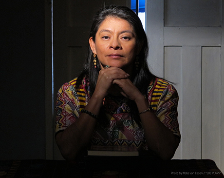
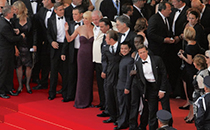

25th Anniversary of the MMFF, “Film Lives!”This milestone season of the Massachusetts Multicultural Film Festiival spotlights documentary filmmaking, primarily by women directors, foregrounding narratives of lives in critical times. Apply Now! Robert Flaherty Film SeminarThe 5 College Film Council is accepting applications for the 2018 5C Flaherty Program, a week-long summer program for Five College students in partnership with the Robert Flaherty Film Seminar. Apply by 2/12! Five College Student Film and Video Festival 2018Submit your film or video for competition in the Five College Film and Video Festival this spring! Deadline: 2/15 at 3pm. 500 Years opens the 2018 MMFFDirector Pamela Yates and producer Paco de Onís joins the MMFF with the third and final installment of Yates's documentary trilogy on Guatemala, "The Resistance Saga," 500 Years, Weds 2/28. Barbara Zecchi, Director of Film StudiesBarbara Zecchi, the new Director of the Interdepartmental Program in Film Studies! Massachusetts Multicultural Film FestivalTake a look back at the 24th Annual Massachusetts Multicultural Film Festival in its spring 2017 season, “Endings/Beginnings.” |
IN THE SPOTLIGHT25th Anniversary Season of the Massachusetts Multicultural Film Festival, this year's theme "Film Lives!" Robert Flaherty Film Seminar, Apply by 2/12! Five College Student Film & Video Festival, submission deadline 2/15! 500 Years, opens the 2018 season for the MMFF with director Pamela Yates and producer Paco de Onís present. Barbara Zecchi, Director of the Interdepartmental Program in Film Studies! Advising! Sign up for a New Student Session or Current Student Advising. |
EVENTS25th Anniversary Season of the Massachusetts Multicultural Film Festival—"Film Lives!"Wednesdays at 7:30pm The Interdepartmental Program in Film Studies is pleased to announce the gala 25th anniversary season of the annual Massachusetts Multicultural Film Festival, “Film Lives!” Opening its spring season on February 28, 2018, with weekly screenings through April 25, this milestone season shines a spotlight on documentary filmmaking, primarily by women directors, foregrounding narratives of individual and collective lives in critical times. The festival will host seven filmmakers present for post-screening discussions, including two Five College alumni. Screenings are accompanied by critical introductions by scholars and filmmakers. Screenings are held on the University of Massachusetts Amherst campus in the Isenberg School of Management Flavin Family Auditorium (137 SOM) at 7:30pm on Wednesday evenings unless otherwise noted. All events are free and open to the public. [More...] 2018 MMFF Opens with 500 YearsWednesday, 2/28 at 7:30pm For opening night of the 2018 season, the Massachusetts Multicultural Film Festival welcomes back acclaimed Brooklyn-based filmmakers Pamela Yates (UMASS '72) and Paco de Onís for the Pioneer Valley premiere of 500 Years, an exposé of Guatemala's official history of brutality, entrenched racism and genocide through the indigenous Mayan population's uprising that threatens to topple a corrupt government, in this final installment of the filmmakers' award-winning Resistance Saga Trilogy. [More...]
|
PROGRAMUndergraduate CertificateThe Undergraduate Certificate Program in Film Studies offers undergraduates a comprehensive interdepartmental course of study in the history, criticism, theory, and aesthetics of the moving image. Film Studies faculty from a broad spectrum of departments offer courses exploring the dynamics of screen representation in topics such as media and culture; race, nation and ethnicity; gender and sexuality; film styles and genre; production and distribution; technology and new media. Graduates go on to prestigious film schools and graduate programs; positions in film and video production; employment in film and video distribution and exhibition, digital and new media, and as editors, producers, actors and independent filmmakers. [More...] Undergraduate Advising and New Student EnrollmentFilm Studies uses the online scheduling tool Appointy as of Fall 2015 for advising appointments and new student information and enrollment sessions. Graduate CertificateThe Graduate Certificate in Film Studies offers graduate students the opportunity to cultivate their work and interest in film studies as an important part of their graduate training. Certificate students have the opportunity to benefit from advanced study in a growing field, mentored by internationally-renowned, award-winning faculty specialists in the arts, humanities and social sciences. [More...] FacultyFaculty from fifteen departments from the College of Humanities and Fine Arts, the School of Behavioral and Social Sciences, and the School of Education teach courses in the Interdepartmental Program in Film Studies and participate in film events and programs at UMass and in the Five Colleges. The Director of Film Studies, Catherine Portuges, is a professor of Comparative Literature specializing in French and East-Central European cinema. [More...] Publications and ProjectsSee recent books, films, and other projects by faculty in the Interdepartmental Program in Film Studies. [More...] Five College InterchangeExpand your undergraduate experience with courses at Amherst, Hampshire, Mount Holyoke, and Smith Colleges. Registration for a Five College course is easy, and the Five College Interchage Office is there to assist you. [More...] New Grad Course in Media and Environmental ConservationECO 691VM – "Video Media for Communicating Science and Conservation": As a greater awareness of sustainability becomes global, how can the ‘video media revolution’ be used to deliver an authentic and accurate message that is both educational and entertaining? Can video media in a diversity of forms be used to positively affect change in they way human societies respond to scientific discoveries and environmental urgencies? In this discussion-based course we will examine how video media can be effectively used to enhance communication in science and conservation, ranging from fundraising to affecting public policy. [More...] Review the Courses and the Five College Interchange page for more information about the program in film studies. |
OPPORTUNITIES2018 Five College Student Film and Video FestivalSubmit your work by February 15, 2018! Eligibility, requirements, and guidelines on the 5 College FF website. Winners of the 2017 Michael S. Roif AwardsSee this year's winners of this Undergraduate film award for students in the Film Certificate program. Michael S. Roif Awards in Film Studies. Bard AbroadSeeking UMass applicants for study abroad through the Bard Abroad programs with the Institute for International Liberal Education. Programs in St. Petersburg, Russia; Bishkek, Kyrgyzstan; and Budapest, Hungary have grown in the last year and now all offer academic year, semester, and summer programs. During the summer in St. Petersburg, students can participate in our intensive RSL program for either four or eight weeks, gaining the equivalent of one year of Russian language study, while in Budapest students participate in internships that are paired with a credit-bearing seminar on the third sector in Eastern Europe. This summer we will also begin a new internship program in Bishkek: Development, Sustainability and Conflict: Contemporary issues in Central Asia. As with all Bard Abroad's programs, these offer rigorous academics, language study, and cultural excursions. Film Studies InternshipApply for the Film Studies internship! The Interdepartmental Program in Film Studies seeks creative, energetic, detail-oriented, dedicated film students with excellent communication and teamwork skills for 3-credit internships during the fall or spring semester. Students with strong skills in videography, photography, and film editing are especially encouraged to apply. The spring internships will support the Massachusetts Multicultural Film Festival as well as other aspects of the Film Studies program. [More...] Manhattan School of Music Film Scoring for Student FilmsManhattan School of Music has been collaborating with film schools so that student composers taking a film scoring class get to work one on one with a student film maker scoring a short film in the Spring semester. This has been a great, "real world" program with many benefits for students on both sides. In an effort to provide our students with a larger pool of films to choose from, and also to offer this opportunity to more film schools nationally, we are currently engaged in attempting to expand the base of film schools and students who may be interested in participating in this program. [More...] Publish Your Work!Call for undergraduate student submissions to the journal Film Matters. [More...] InternshipsStudents in Film Studies each year benefit from internship opportunities with such world class programs as the Academy of Television Arts and Sciences and the American Pavilion at the Cannes Film Festival, the Venice Film Festival, and the L.A. Intensive program, and also with local film organizations such as the Media Education Foundation, the Pioneer Valley Jewish Film Festival, Amherst Cinema, ACTV, and our own Interdepartmental Program in Film Studies at UMass. [More...] Michael S. Roif AwardThe Michael S. Roif Award in Film Studies is a competitive annual prize awarded to students in the Undergraduate Film Studies Certificate Program. Nominate your outstanding film students for the this year's award. [More...] Film FestivalsStudents are invited to submit work to film competitions at UMass, in the Five Colleges, locally, and internationally, such as the UMass Undergraduate Film Festival, the Five College Student Film Festival and other competitions announced on the Film Studies website. [More...] Film SchoolsCertificate students go on to pursue programs in filmmaking and advanced degrees in film and media studies. Listings on our Film Schools page offer a starting point for exploring options for further study. Representatives from programs such as LIU's innovative M.F.A. in Writing and Producing for Television meet with our students for in-depth informational and Q&A colloquia. [More...] Study AbroadTake advantage of the enriching experiences of studying abroad, including unique film studies opportunities that fulfill certificate course requirements. [More...] Explore other resources such as film groups, research tools, and career building tools.
|